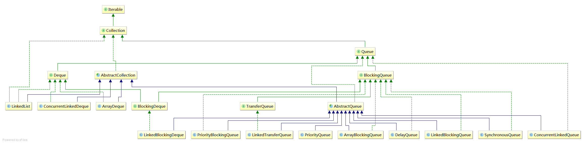

Queue
Queue在处理元素前用于保存元素的集合。处理基本的Collection操作外，队列还提供其他的插入、提取、检查操作。每个方法都存在两种形式：一种抛出异常（操作失败时），另一种返回一个特殊值（null 或 false，具体取决于操作）。
| 抛出异常 | 返回特殊值 | |
|---|---|---|
| 插入 | add(e) | offer(e) |
| 移除 | remove() | poll() |
| 检查 | element() | peek() |
Queue的UML图： 
使用Queue时不要试图插入null值，虽然有的实现类支持（有的直接就不支持），但是由于null是某些操作的返回值，有null元素会产生误会。
接口
Deque
Deque是"双端队列(double ended queue)"的缩写，一个线性Collection，支持在两端插入和移除元素，继承了Queue接口。
该接口定义了双端访问元素的方法。提供插入、移除、检查元素的方法
BlockingQueue
BlockingQueue继承了Queue接口，新增了两个操作：
- 获取元素时等待队列变为非空
- 存储元素时等待空间变得可用
它的方法以四种形式出现：
| 抛出异常 | 特殊值 | 阻塞 | 超时 | |
|---|---|---|---|---|
| 插入 | add(e) | offer(e) | put(e) | offer(e,time,unit) |
| 移除 | remove() | poll() | tabke() | poll(time,unit) |
| 检查 | element() | peek() |
它不接受null元素。
它的实现是 线程安全的
BlockingDeque
BlockingDeque继承了BlockingQueue和Deque接口，新增了两个操作：
- 获取元素时等待双端队列变为非空
- 存储元素时等待双端队列中的空间变得可用
它的方法也有四种形式
它同样不支持插入null元素，实现同样是 线程安全
TransferQueue
TransferQueue继承了BlockingQueue接口，新增一种特殊的操作“生产者一直阻塞直到所添加到队列的元素被某一个消费者消费” ，是Java7新增的接口。
它定义了两个tryTransfer方法，一个阻塞，另一个是带有timout参数设置超时时间的。 还定义了两个辅助方法
- getWaitingConsumerCount()：返回等待接收元素的消费者个数
- hasWaitingConsumer()：是否有至少一个消费者在等待接收元素
实现类
ConcurrentLinkedDeque
ConcurrentLinkedDeque基于双向链表（doubly-linked）的 无界并发 Deque接口实现。
迭代操作时，是弱一致性。size方法也不是固定时间的操作。
日期：2014-05-30